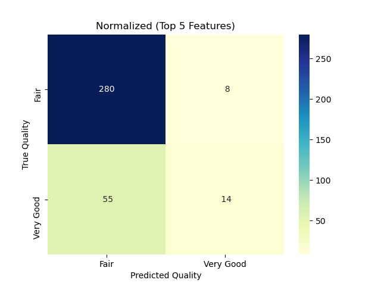
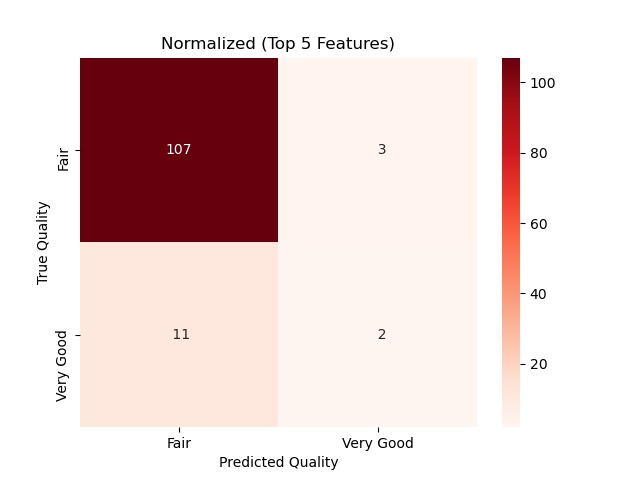

In data exploration and modeling, we utilize all features to predict the quality of the wine. We perform the Support Vector Classifier(SVC) method and use Grid Search CV tuning to achieve an 82 % accuracy rate.
There are two possible predicted classes: "Fair" and "Very Good". If we were predicting the quality of wine, "very good" would mean to have better quality, and "Fair" would mean to lower quality of wine.
The classifier made a total of 357 predictions.
Out of those 357 cases, the classifier predicted "Very Good" 28 times, and "Fair" 329 times.
In reality, 79 cases in the sample are in category of very good quality, 278 cases are not.
Top Five Features

Summary:
In data exploration and modeling, we perform importance features methods to select the top five features to predict the quality of the wine. We perform the Support Vector Classifier(SVC) method and use Grid Search CV tuning to achieve an 82 % accuracy rate. There is no significant change after removing the lower score of features.
There are two possible predicted classes: "Fair" and "Very Good". If we were predicting the quality of wine, "Very Good" would mean to have better quality, and "fair" would mean to lower quality of wine.
The classifier made a total of 357 predictions.
Out of those 357 cases, the classifier predicted "Very Good" 22 times, and "Fair" 335 times.
In reality, 69 cases in the sample are in category of very good quality, 288 cases are not.
Red Wine
All Features
Features by Score Ranking
alcohol - 0.171243
sulphates - 0.112875
volatile acidity - 0.09814
citric acid - 0.096145
density - 0.085803
total sulfur dioxide - 0.082951
fixed acidity- 0.075679
residual sugar - 0.073609
free sulfur dioxide - 0.069072
pH - 0.067486
chlorides - 0.066996
Target Value:
Quality - Fair and Very Good
Methods:
Training size : 0.7
Support Vector Classifier
GridSearch CV
Summary:
In data exploration and modeling, we utilize all features to predict the quality of the wine. We perform the Support Vector Classifier(SVC) method and use Grid Search CV tuning to achieve an 92 % accuracy rate.
There are two possible predicted classes: "Fair" and "Very Good". If we were predicting the quality of wine, "Very Good" would mean to have better quality, and "Fair" would mean to lower quality of wine.
The classifier made a total of 123 predictions.
Out of those 123 cases, the classifier predicted "Very Good" 6 times, and "Fair" 117 times.
In reality, 20 cases in the sample are in category of very good quality, 103 cases are not.
Top Five Features

Summary:
In data exploration and modeling, we perform importance features methods to select the top five features to predict the quality of the wine. We perform the Support Vector Classifier(SVC) method and use Grid Search CV tuning to achieve an 89 % accuracy rate. There is a slight increase after removing the lower score of features.
There are two possible predicted classes: "Fair" and "Very Good". If we were predicting the quality of wine, "Very Good" would mean to have better quality, and "Fair" would mean to lower quality of wine.
The classifier made a total of 123 predictions.
Out of those 123 cases, the classifier predicted "Very Good" 5 times, and "Fair" 118 times.
In reality, 13 cases in the sample are in category of very good quality, 110 cases are not.